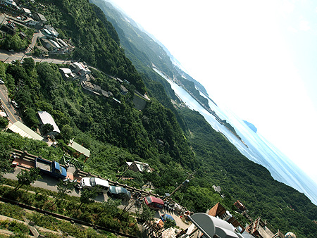
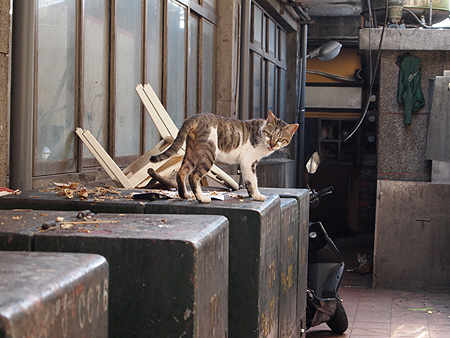
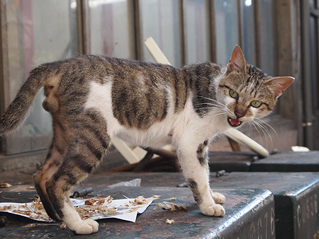
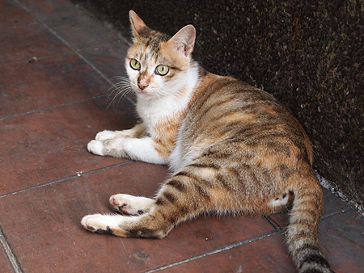
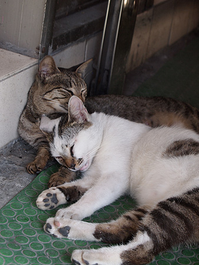
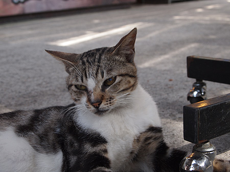
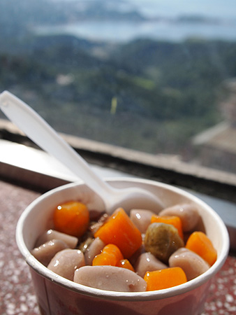

とにもかくにも、日本人観光客がわんさか！ここは日本かー？ってぐらい日本語を聞いた。
やっぱり千と千尋のロケ地効果って感じなのかな。
そんなわけで、よくある風景とかはスルーして…
とにもかくにも、日本人観光客がわんさか！ここは日本かー？ってぐらい日本語を聞いた。
やっぱり千と千尋のロケ地効果って感じなのかな。
そんなわけで、よくある風景とかはスルーして…
{kind=link}

九份の猫です。{kind=link}

シャー！！！！…ってすっごい見た目で威嚇してくるけど、意外とフレンドリーだった。 スリスリと寄ってきた。かわゆい。{kind=link}

すぐそばには太太（奥さん）{kind=link}

どんなに暑くても、猫は固まって寝るのねー。{kind=link}

お疲れ気味{kind=link}

芋圆カキ氷。頂上付近にある有名芋圆屋さん。 これがむっちむっち（台湾風に言うとＱＱ)でうんまいの。粗引きの氷とやさしい味の豆と癖になる歯ごたえの芋圆のブレンド具合が幸せ。暑すぎてあっという間に氷が溶けてしまったのが悔しい。 しかも、お店の奥には絶景休憩所。 なぜかここには日本人観光客がいなかった。ちょっと判りにくい場所だからかしらん？（かく言う私も、前回来たときにスルーしていた）{kind=link}

帰りもバスと電車で…と思っていたら、タイミング良く台北行きバスが来たので飛び乗った。 が、電車の方が安いのね。115元。電車とバスだと45元＋15元だったかな。 …と、バス停以外のとこで突然停止。なんだろーと思っていたら檳榔小姐！運転手のおじちゃんが檳榔購入。 ちょうど運転手さんの真後ろの席にいたのだけど、ものすごい勢いで檳榔をカミカミしてた。 --------------------------- ビンロウ（檳榔、学名：Areca catechu） 檳榔子を細く切ったもの、あるいはすり潰したものを、キンマ（コショウ科の植物）の葉にくるみ、少量の石灰と一緒に噛む。しばらくすると軽い興奮・酩酊感が得られるが、煙草と同じように慣れてしまうと感覚は鈍る。 --------------------------- そのせいなのか運転が覚醒級（？）で、三半規管の弱い孩子（子ども）だったら5分で別世界行き！って感じのアクロバチックドライブ。 乗車料金で学生と途中で喧嘩したり、知り合い（？）のバスにクラクションを鳴らしたりと、1時間ちょっとのバスはとにかくエキサイティングだった。 これがフツーの台湾バスなのかしらん？それとも檳榔効果？